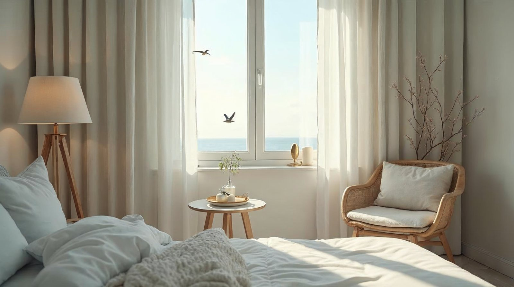
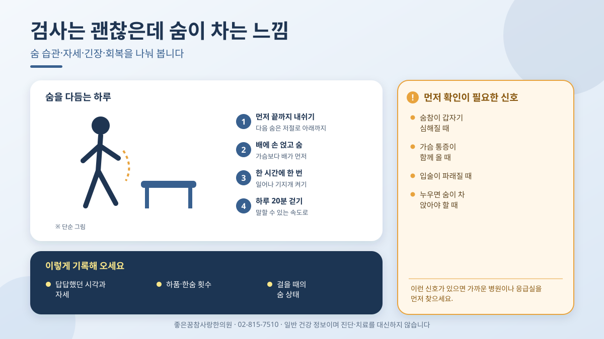

이종호 한의사 감수좋은꿈참사랑한의원 대표원장 (한의사 면허번호 19769)발행 2026-11-26 · 수정 2026-11-26
이 글의 차례
저녁 설거지를 하다가 문득 숨을 크게 들이쉽니다. 그런데 숨이 가슴 끝까지 차오르지 않고 중간에서 턱 걸리는 느낌입니다. 한 번 더, 또 한 번 더 깊게 들이쉬어 보다가 하품처럼 크게 쉬어지는 순간에야 겨우 개운해집니다. 하루에도 몇 번씩 이런 일이 반복됩니다.
병원에서 흉부 사진도 찍고 폐 기능 검사, 심장 검사도 받아 보았는데 괜찮다는 말을 들었습니다. 다행이지만, 그렇다면 이 답답함은 어디서 오는 걸까요. 진료실에서 이 질문을 들고 오시는 분이 생각보다 많습니다.
숨이 차다는 느낌은 실제로 몸에 산소가 모자란 상태와 꼭 같지 않습니다. 숨이 모자란다고 느끼는 감각은 숨을 쉬는 근육, 가슴의 움직임, 뇌가 받아들이는 신호가 함께 만들어 냅니다. 그래서 검사 숫자가 정상이어도 답답한 느낌은 얼마든지 생길 수 있습니다.
이 글에서는 검사가 정상인데도 숨이 차는 느낌이 왜 생기는지, 어떤 갈래로 나눠 볼 수 있는지, 그리고 일상에서 숨을 다듬는 방법과 한의원에서 함께 살필 수 있는 부분을 정리해 보겠습니다.
숨이 차는 느낌은 어떻게 생기나요
숨을 쉴 때 뇌는 여러 곳에서 신호를 받습니다. 혈액 속 산소와 이산화탄소의 양, 폐가 늘어나는 정도, 숨 쉬는 근육이 얼마나 애쓰는지가 모두 전달됩니다. 이 신호들이 서로 맞아떨어지면 숨이 편하다고 느끼고, 어긋나면 답답하다고 느낍니다.
그래서 산소가 충분해도 숨 쉬는 근육이 지나치게 애쓰거나, 가슴이 굳어 잘 늘어나지 않으면 숨이 모자란 것처럼 느껴집니다. 몸 안의 실제 상태와 몸이 느끼는 감각 사이에 틈이 생기는 것입니다.
이 틈은 상상이 아닙니다. 몸이 보내는 진짜 신호이지만, 그 신호의 출처가 폐나 심장이 아닌 다른 곳에 있다는 뜻입니다. 그 출처를 찾아가는 것이 이 불편을 다루는 길입니다. 저는 진료실에서 그 길을 함께 천천히 걸어가고 싶습니다.
왜 검사는 괜찮은데 숨이 찰까요
가장 흔한 이유는 숨 쉬는 습관입니다. 가슴 위쪽과 어깨로만 얕게 숨을 쉬면, 숨을 많이 쉬는데도 폐 아래쪽까지 공기가 잘 닿지 않는 느낌이 듭니다. 그 부족함을 메우려고 한숨과 하품 같은 깊은 숨이 자꾸 나옵니다.
자세도 숨을 바꿉니다. 오래 고개를 숙이고 등을 둥글게 만 채 앉아 있으면 갈비뼈가 아래로 눌리고 배가 접혀, 횡격막이 충분히 내려가지 못합니다. 앉아 있을 때는 답답하다가 일어나 걷거나 기지개를 켜면 숨이 풀린다는 분이 많은 이유입니다.
긴장도 큰 몫을 합니다. 마음이 쫓기면 숨 쉬는 근육이 굳고, 숨에 자꾸 신경이 쓰입니다. 숨을 의식하면 할수록 자연스러운 리듬이 흐트러지고, 그 흐트러짐이 다시 답답함으로 느껴집니다.
체력이 떨어진 경우도 있습니다. 오래 움직이지 않으면 조금만 걸어도 숨이 가빠지고, 그 경험이 쌓이면 숨에 예민해집니다. 빈혈이나 갑상선 기능 변화, 역류처럼 다른 원인이 숨어 있는 경우도 있어 피 검사 결과를 함께 확인합니다.
갈래별로 이렇게 나눠 봅니다
숨 습관 쪽에 가까운 경우
가만히 앉아 있을 때 오히려 답답하고, 하품이나 한숨을 쉬어야 개운합니다. 말을 하다 숨이 차서 중간에 몰아쉬고, 숨을 쉴 때 배보다 가슴과 어깨가 더 움직입니다. 걷거나 운동할 때는 의외로 덜 불편하다는 분도 계십니다.
자세와 근육 쪽에 가까운 경우
오래 앉아 일한 날 오후에 심해지고, 기지개를 켜거나 등을 펴면 나아집니다. 목과 어깨, 등 위쪽이 늘 뻐근하고, 갈비뼈 사이를 누르면 아픈 자리가 있습니다. 숨을 깊게 쉬려 하면 등이 같이 당긴다고 표현하시기도 합니다.
긴장과 걱정 쪽에 가까운 경우
바쁜 날, 사람을 만나는 날, 잠이 모자란 날에 심하고, 쉬는 날에는 잊고 지냅니다. 숨에 신경을 쓰기 시작하면 더 답답해지고, 잠들기 전에 숨이 신경 쓰여 잠을 설치기도 합니다.
체력과 회복 쪽에 가까운 경우
감기나 폐렴, 큰 수술이나 출산을 겪은 뒤 몸이 덜 회복된 상태에서 자주 봅니다. 계단 몇 층에도 숨이 가쁘고 금세 지칩니다. 검사는 괜찮지만 몸 전체의 힘이 아직 예전만 못한 경우입니다.
과호흡, 흉민과는 어떻게 다른가요
과호흡은 긴장한 순간에 숨이 갑자기 몰아쳐 빨라지고 손발이 저리는 일이 짧게 지나가는 모양입니다. 호흡곤란감은 숨이 빨라지기보다 숨이 끝까지 차오르지 않는 느낌이 하루에도 여러 번, 오래 이어지는 경우가 많습니다. 두 가지가 함께 있는 분도 계십니다.
흉민은 가슴이 꽉 막히고 묵직한 느낌이 중심에 있습니다. 호흡곤란감은 가슴보다 숨 자체가 덜 쉬어진다는 표현이 많습니다. 어느 쪽이든 진료실에서는 이름보다 그 느낌이 언제, 어떻게 오는지를 더 자세히 여쭙니다.
스스로 점검해 보세요
- 하품이나 한숨을 쉬어야 숨이 개운해지나요?
- 가만히 앉아 있을 때 더 답답한가요?
- 숨을 쉴 때 어깨가 함께 올라가나요?
- 말을 하다 중간에 숨을 몰아쉬나요?
- 바쁘고 긴장한 날에 더 심한가요?
- 잠들기 전에 숨이 신경 쓰여 잠을 설치나요?
여러 개가 해당된다면 숨 습관과 긴장을 함께 살펴볼 필요가 있습니다. 숨 습관은 연습으로 다듬을 수 있는 부분이니, 해당하는 것이 많다고 걱정부터 하실 필요는 없습니다.
먼저 이렇게 여쭙니다
- 어떤 검사를 언제 받으셨나요?
- 답답함은 하루 중 언제, 어떤 자세에서 심한가요?
- 걷거나 움직일 때는 어떤가요?
- 기침이나 쌕쌕거리는 소리, 가래가 있나요?
- 코막힘이나 속쓰림이 함께 있나요?
- 요즘 잠과 마음의 부담은 어떠신가요?
- 드시는 약이나 영양제가 있나요?
일상에서 먼저 해 볼 수 있는 것
하루 두세 번, 의자에 기대 앉아 한 손은 배에, 한 손은 가슴에 얹어 보세요. 코로 조용히 들이쉬며 배 쪽 손이 먼저 부풀고, 입이나 코로 천천히 내쉬며 배가 들어가는 것을 느낍니다. 깊게 쉬려고 애쓰기보다 조용하고 느리게 쉬는 것이 목표입니다.
하품 같은 깊은 숨을 쉬고 싶을 때 바로 크게 들이쉬지 말고, 먼저 숨을 천천히 끝까지 내쉬어 보세요. 다 내쉬고 나면 다음 숨은 저절로 아래까지 들어오는 경우가 많습니다. 들이쉬기보다 내쉬기가 숨의 열쇠라고 기억해 두시면 좋습니다.
자세는 한 시간에 한 번씩 바꿔 주세요. 일어나 두 팔을 머리 위로 뻗고, 옆구리를 늘리며 숨을 쉬어 봅니다. 모니터는 눈높이로 올리고, 의자 등받이에 허리를 붙여 배가 접히지 않게 앉습니다.
몸을 움직이는 시간도 조금씩 늘려 갑니다. 하루 이십 분 정도 평지 걷기부터 시작해, 숨이 살짝 차오르지만 말은 할 수 있을 정도의 속도를 유지해 보세요. 숨이 차오르는 경험을 편안한 범위에서 자주 겪으면 몸이 숨에 덜 놀랍니다.
코가 자주 막힌다면 그 부분도 함께 봅니다. 입으로 숨을 쉬면 숨이 얕고 빨라지기 쉽습니다. 실내를 너무 건조하지 않게 하고, 잠들기 전 따뜻한 물로 코 주변을 데워 주는 것도 도움이 됩니다.
말할 때 숨이 차는 분께
하루 종일 말을 많이 하는 일을 하시는 분들은 문장 끝에서 숨이 모자라 몰아쉬는 일이 잦습니다. 숨이 다 떨어질 때까지 말을 이어 가다 급하게 크게 들이쉬는 습관이 반복되면, 퇴근 무렵에는 가슴이 답답하고 목이 조이는 느낌이 남습니다.
문장을 조금 짧게 끊고, 쉼표마다 코로 살짝 숨을 채워 보세요. 말하는 속도를 아주 조금만 늦춰도 숨이 한결 고르게 따라옵니다. 전화 통화나 회의 중에도 의자 등받이에 기대 배가 접히지 않게 앉으면 숨이 덜 걸립니다.
앓고 난 뒤 숨이 덜 돌아왔을 때
감기나 독감, 폐렴을 앓고 난 뒤에는 검사가 정상으로 돌아온 뒤에도 몇 주 동안 숨이 예전 같지 않을 수 있습니다. 기침을 오래 하면서 갈비뼈 사이 근육이 지치고, 누워 지낸 시간만큼 체력도 떨어졌기 때문입니다.
이 시기에는 서두르지 않는 것이 중요합니다. 첫 주는 집 근처를 천천히 걷고, 숨이 편안하다면 조금씩 거리를 늘려 갑니다. 하루 활동을 너무 몰아서 하면 다음 날 숨이 더 무겁게 느껴질 수 있으니, 짧게 여러 번 나눠 움직이시길 권합니다.
실내 공기와 계절도 함께 봅니다
겨울에 난방을 세게 하고 창문을 닫아 두면 실내가 덥고 건조해져 숨이 답답하게 느껴지기 쉽습니다. 실내 온도를 조금 낮추고, 한두 시간마다 창을 열어 공기를 바꿔 주세요. 가습기를 쓰신다면 물통을 자주 씻어 깨끗하게 관리합니다.
찬 바깥 공기를 갑자기 들이마시면 가슴이 움찔하며 숨이 막히는 느낌이 드는 분도 계십니다. 겨울 아침 외출할 때는 마스크나 목도리로 코와 입을 가볍게 덮어, 공기가 조금 데워진 뒤 들어오도록 해 보세요.
숨에 너무 신경 쓰일 때
숨이 답답한 느낌이 반복되면 하루 종일 숨을 감시하듯 지내게 됩니다. 그런데 숨은 신경 쓸수록 리듬이 흐트러지는 움직임입니다. 숨이 신경 쓰일 때는 숨 대신 발바닥이 바닥에 닿는 느낌이나 손에 쥔 컵의 온도처럼 다른 감각으로 주의를 옮겨 보세요.
잠자리에서 숨이 신경 쓰인다면 등을 대고 바로 눕기보다 옆으로 누워 무릎을 살짝 굽혀 보세요. 배가 편하게 움직일 틈이 생깁니다. 잠들기 전 휴대폰을 내려놓고 조명을 낮추는 것도 숨을 고르는 데 도움이 됩니다.

숨을 편하게 하는 하루 흐름
아침에는 일어나자마자 휴대폰을 보기보다, 창가에서 두 팔을 벌리고 천천히 세 번 숨을 내쉬며 하루를 시작해 보세요. 점심 뒤에는 십 분 정도 걷고, 오후에 한 번 일어나 기지개를 켭니다. 이런 작은 틈이 숨이 몸 아래쪽까지 내려가는 시간을 만들어 줍니다.
저녁에는 과식을 피하고, 잠들기 두세 시간 전에는 식사를 마치시길 권합니다. 배가 꽉 차 있으면 횡격막이 내려갈 자리가 줄어 숨이 더 답답하게 느껴집니다. 따뜻한 물로 샤워해 어깨와 등을 데운 뒤 잠자리에 들면 숨이 한결 편하다는 분이 많습니다.
커피와 에너지 음료는 가슴을 두근거리게 하고 숨을 빠르게 만들 수 있습니다. 하루에 마시는 양과 시각을 적어 보고, 답답함이 심한 날과 겹치는지 살펴보세요. 오후 이른 시간 이후에는 줄여 보는 것만으로도 저녁 숨이 달라졌다는 분이 계십니다.
한의원에서 함께 살필 수 있는 경우
폐와 심장 쪽 검사로 큰 문제가 없다는 확인을 받은 뒤라면 한의원에서도 함께 살필 수 있습니다. 진찰을 마친 뒤 그때의 상태에 맞춰 방법을 고르며, 모든 분께 같은 치료를 드리지는 않습니다.
- 목, 어깨, 등 위쪽이 굳고 숨을 깊게 쉬면 등이 당기는 경우
- 한숨과 하품이 잦고 가슴이 답답하며 잠을 설치는 경우
- 앓고 난 뒤 기운이 덜 돌아와 조금만 움직여도 숨이 가쁜 경우
- 긴장한 날마다 숨이 덜 쉬어지는 느낌이 반복되는 경우
근육과 자세 쪽은 침이나 약침, 필요에 따라 추나로 등과 갈비뼈의 움직임을 살핍니다. 숨 쉬는 모양은 진료실에서 함께 연습하고, 기운이 떨어진 회복기라면 생활 리듬을 정리하며 필요하다고 판단되면 한약을 고려합니다. 한약은 지금 드시는 약을 모두 확인한 뒤 신중하게 정합니다.
천식이나 다른 질환으로 처방받은 흡입제나 약이 있다면 임의로 멈추지 마세요. 한의원 진료는 그 치료와 함께 가는 것입니다. 임신 중이시라면 처음에 먼저 알려 주시고 산부인과 선생님과도 상의해 주세요.
이렇게 기록해 오시면 상담이 쉬워집니다
- 답답했던 시각과 그때의 자세, 하던 일
- 하품이나 한숨이 나온 횟수(대략)
- 걷거나 움직일 때의 숨 상태
- 그날의 잠, 커피, 마음 상태
- 숨 연습을 했던 날과 하지 않은 날의 차이
일주일 정도의 기록이면 충분합니다. 답답했던 순간만 적지 말고 편했던 순간도 함께 적어 오시면, 무엇이 숨을 편하게 하는지가 같이 보입니다. 그 단서가 생활을 바꾸는 출발점이 됩니다.
이런 증상은 먼저 확인이 필요합니다
- 숨찬 느낌이 갑자기 심해지고 가슴 통증이나 입술이 파래지는 증상이 함께 오는 경우
- 누우면 숨이 차서 앉아야 하거나 다리가 붓고 숨참이 점점 심해지는 경우
이런 신호가 있으면 한의원보다 가까운 병원이나 응급실을 먼저 찾으세요.
함께 읽으면 좋은 글
- 가슴이 꽉 막힌 듯 답답하고 한숨이 자꾸 나오는 흉민은 어떻게 살피나요?
- 폐렴 치료는 끝났는데 기침과 숨참, 기운 없음이 남아 있을 때 회복기는 어떻게 살피나요?
- 빈혈이 있다는 말을 듣고 어지럽고 쉽게 지칠 때, 철분과 생활은 어떻게 살피나요?
- 갑자기 숨이 막히고 가슴이 뛰는 공황 같은 발작이 올 때는 어떻게 하나요?
- 목 뒤가 볼록하게 솟고 등이 굽어 보이는 버섯목은 왜 생기고 어떻게 살피나요?

여쭙는 것
- 어떤 검사를 언제 받으셨나요?
- 답답함은 하루 중 언제, 어떤 자세에서 심한가요?
- 걷거나 움직일 때는 어떤가요?
생활에서 해 볼 것
- 하루 두세 번, 의자에 기대 앉아 한 손은 배에, 한 손은 가슴에 얹어 보세요.
- 코로 조용히 들이쉬며 배 쪽 손이 먼저 부풀고, 입이나 코로 천천히 내쉬며 배가 들…
- 깊게 쉬려고 애쓰기보다 조용하고 느리게 쉬는 것이 목표입니다.
한의원에서 함께 살필 것
- 목, 어깨, 등 위쪽이 굳고 숨을 깊게 쉬면 등이 당기는 경우
- 한숨과 하품이 잦고 가슴이 답답하며 잠을 설치는 경우
- 앓고 난 뒤 기운이 덜 돌아와 조금만 움직여도 숨이 가쁜 경우
먼저 확인이 필요한 신호
- 숨찬 느낌이 갑자기 심해지고 가슴 통증이나 입술이 파래지는 증상이 함께 오는 경우
- 누우면 숨이 차서 앉아야 하거나 다리가 붓고 숨참이 점점 심해지는 경우
한눈에 보는 표
| 구분 | 핵심 |
|---|---|
| 여쭙는 것 | 어떤 검사를 언제 받으셨나요? 답답함은 하루 중 언제, 어떤 자세에서 심한가요? |
| 한의원에서 함께 살필 것 | 목, 어깨, 등 위쪽이 굳고 숨을 깊게 쉬면 등이 당기는 경우 한숨과 하품이 잦고 가슴이 답답하며 잠을 설치는 경우 |
| 먼저 확인이 필요한 신호 | 숨찬 느낌이 갑자기 심해지고 가슴 통증이나 입술이 파래지는 증상이 함께 오는 경우 누우면 숨이 차서 앉아야 하거나 다리가 붓고 숨참이 점점 심해지는 경우 |
자주 묻는 질문
검사가 다 정상인데 숨이 차는 건 기분 탓인가요?
기분 탓으로 넘길 일은 아닙니다. 숨이 차는 느낌은 숨 쉬는 근육과 자세, 긴장이 함께 만들어 내는 진짜 감각입니다. 다만 그 출처가 폐나 심장이 아닌 다른 곳에 있을 수 있다는 뜻입니다.
하품이 자꾸 나오는 것도 관련이 있나요?
숨이 얕을 때 몸은 하품이나 한숨으로 깊은 숨을 채우려 합니다. 하품과 한숨이 유난히 잦다면 평소 숨 습관을 함께 살펴보시길 권합니다.
숨 연습을 하면 오히려 더 답답해요.
처음에는 숨에 신경을 쓰면서 더 답답하게 느껴질 수 있습니다. 깊게 들이쉬려 하지 말고, 천천히 내쉬는 쪽에만 마음을 두고 짧게 시작해 보세요.
마스크를 쓰면 숨이 더 답답해요.
얇고 몸에 맞는 마스크를 고르고, 혼잡하지 않은 바깥에서는 잠시 내려 숨을 고르셔도 됩니다. 마스크를 쓴 채 말을 많이 해야 할 때는 문장을 짧게 끊어 숨을 채워 보세요.
운동을 해도 괜찮나요?
검사에서 큰 문제가 없다면 가벼운 걷기부터 시작해 보세요. 말을 할 수 있을 정도의 속도로, 몸의 반응을 보며 조금씩 늘려 가는 것이 좋습니다.
좋은꿈참사랑한의원은 재진 때 지난번 이야기부터 이어서 여쭙니다. 진료시간과 예약은 오시는 길에서 확인하세요.
어디서 상담받을 수 있나요?
좋은꿈참사랑한의원은 서울 동작구 만양로2길 2 신성빌딩 3층·5층(서울 동작구 상도동, 7호선 상도역 3번 출구 근처)에 있습니다. 한의사 3명(이종호 대표원장, 조영기 수석진료원장, 정원영 진료원장)이 진료합니다. 진료시간은 평일 09:30~20:00(점심 13:00~14:00), 토·일·공휴일 09:30~15:00이며, 방문 전 전화로 확인을 권합니다. 예약은 네이버 예약, 카카오톡 상담, 전화 02-815-7510로 받습니다.
이 글은 일반적인 건강 정보이며 개인의 진단이나 치료를 대신하지 않습니다. 증상이 있거나 복용 중인 약이 있다면 진료를 통해 확인하세요. 치료 효과는 개인마다 다를 수 있습니다.
작성 기준: 일반적으로 알려져 있는 건강 정보를 참고해 정리했습니다(대표원장 감수). 증상 기록은 1~2주 동안 하루 1회, 비슷한 시간에 적어 오시면 지난 상태와 비교하기 쉽습니다.